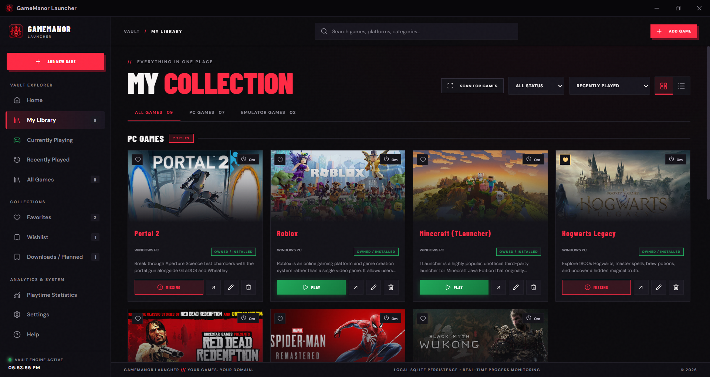
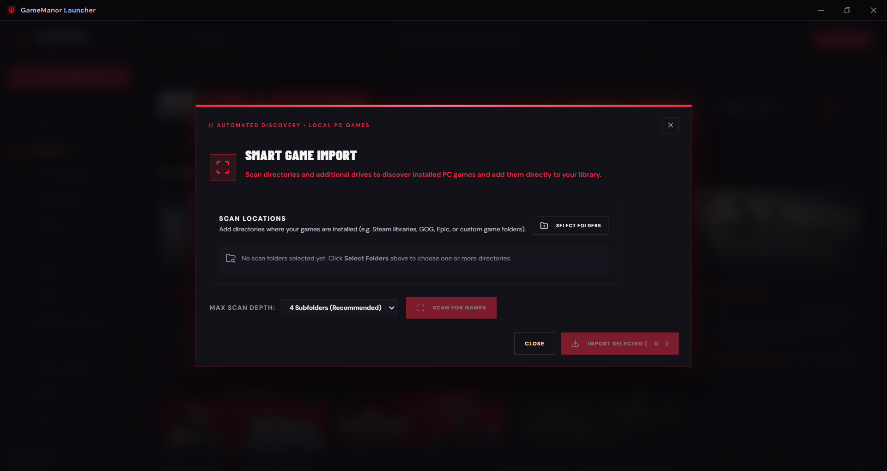
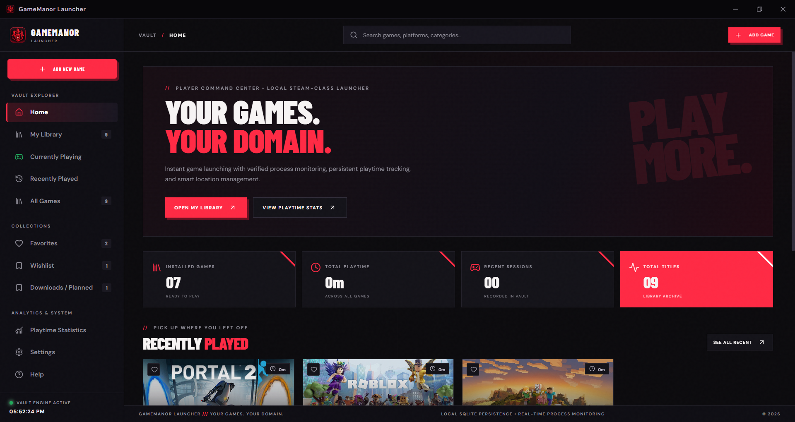
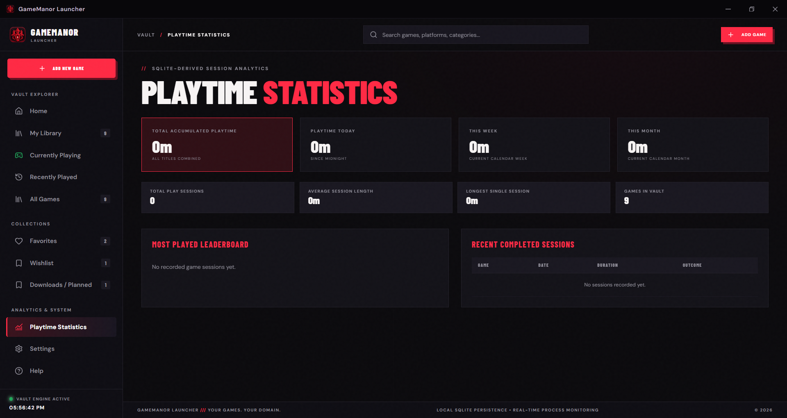
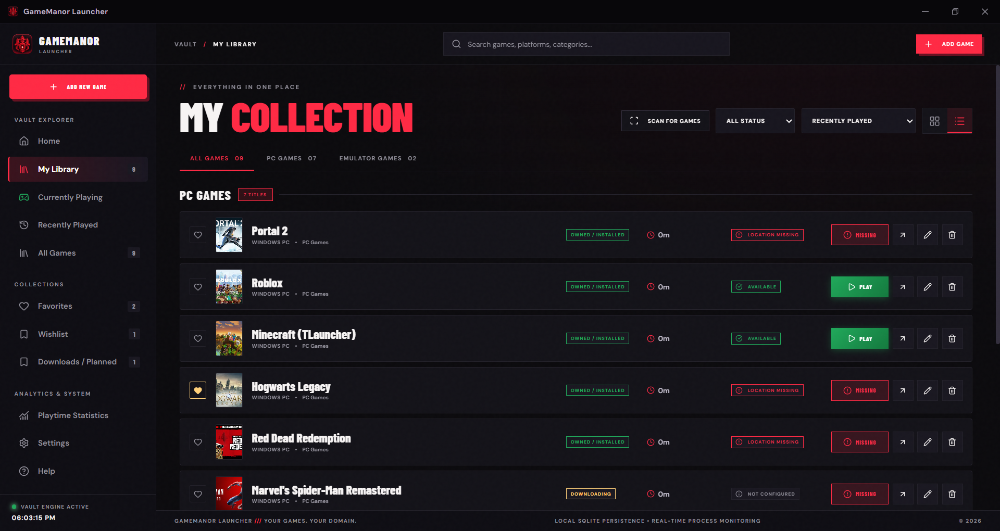
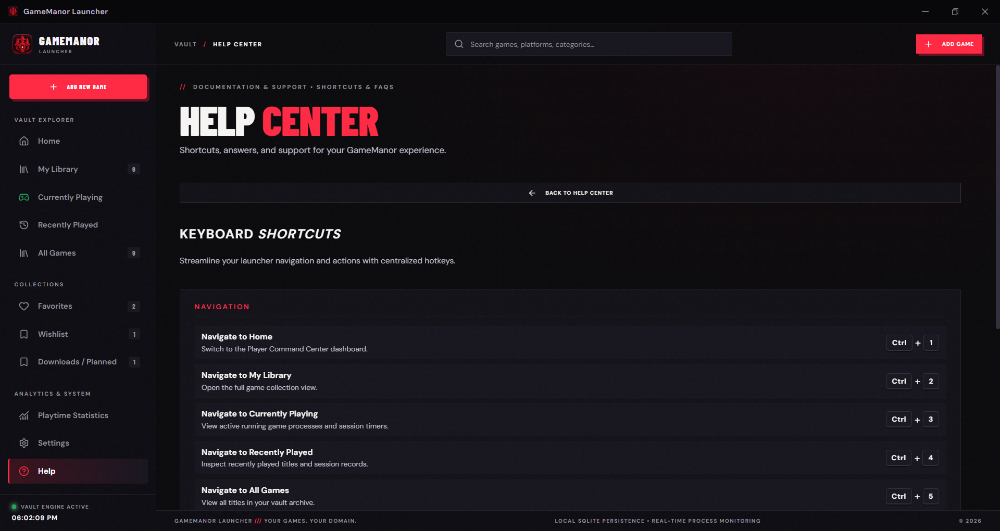
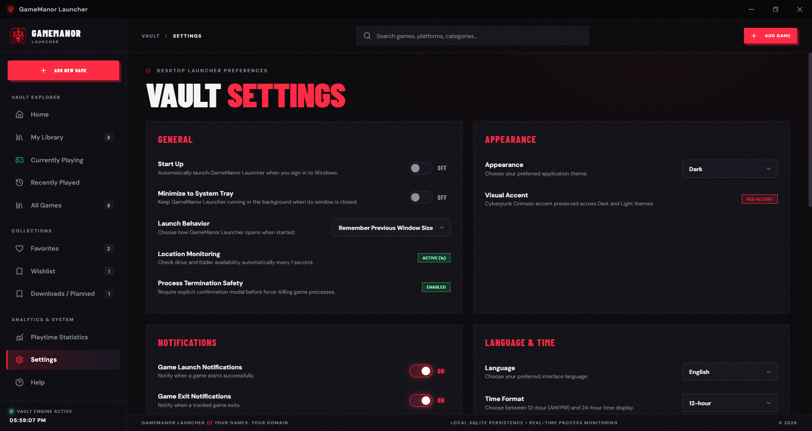

BUILT FOR SPEED. ENGINEERED FOR CONTROL.
Every feature in GameManor Launcher is designed around a single principle: giving PC gamers clean, distraction-free ownership of their game library without unnecessary overhead.
DYNAMIC LIBRARY MANAGEMENT
Browse your entire game collection seamlessly. Switch between high-density cover card grids and detailed data lists with persistent display preferences.

SMART GAME IMPORT ENGINE
Import games from anywhere on your PC without giving up control. Select specific game directories and let the cautious discovery engine identify playable installations.

DIRECT EXECUTABLE LAUNCHING
Launch PC games directly with custom working directories and command-line arguments. The launcher continuously monitors the active process PID to keep your vault updated in real time.

PRECISE PLAYTIME ANALYTICS
Know exactly how much time you have invested into every game. GameManor tracks timestamps for every gaming session and computes aggregate statistics automatically.

INSTALLATION & DRIVE MONITORING
Keep external drives and secondary storage organized. GameManor's background monitor checks file and drive availability automatically.

CENTRALIZED SHORTCUT REGISTRY
Navigate your gaming collection without lifting your hands from the keyboard. A unified shortcut registry powers both in-app hotkeys and the Help Center view.
Ctrl + K to instantly focus search.
Ctrl + 1..5.

SETTINGS, BACKUPS & DATA PRIVACY
You own your data. GameManor includes built-in database backup tools, SQLite integrity checks, theme switching, and safe cache management.

PLANNED CAPABILITIES
Features currently in development for upcoming GameManor Launcher releases.
Automatic Updates
In-app release notifications and background update downloads when new versions publish to GitHub.
Encrypted Cloud Sync
End-to-end encrypted backup synchronization across multiple personal Windows PCs.
IGDB Metadata Scraping
Automated cover artwork retrieval and release date lookups for imported game titles.